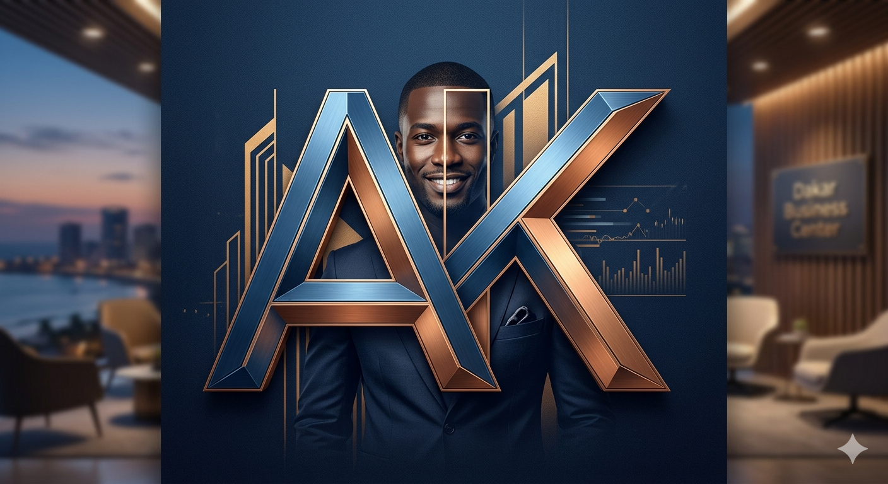
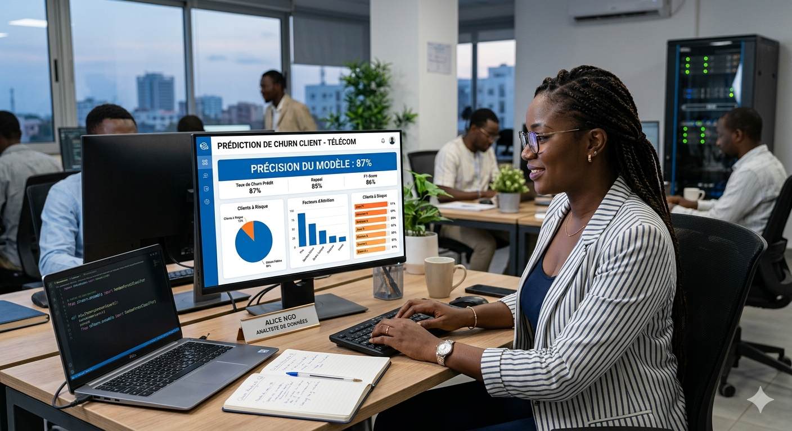
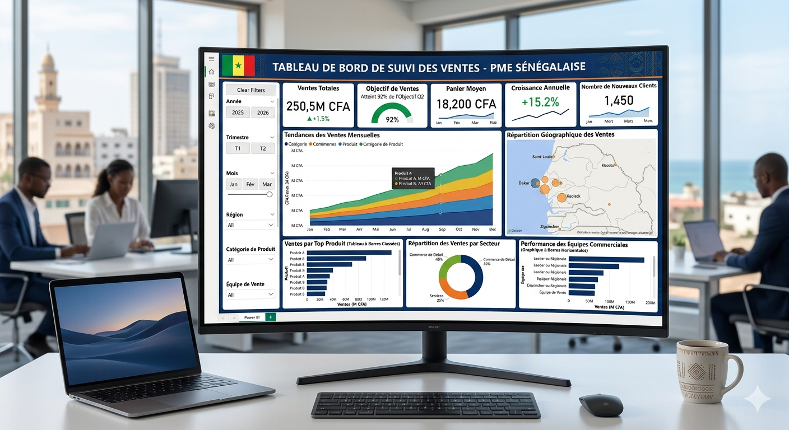
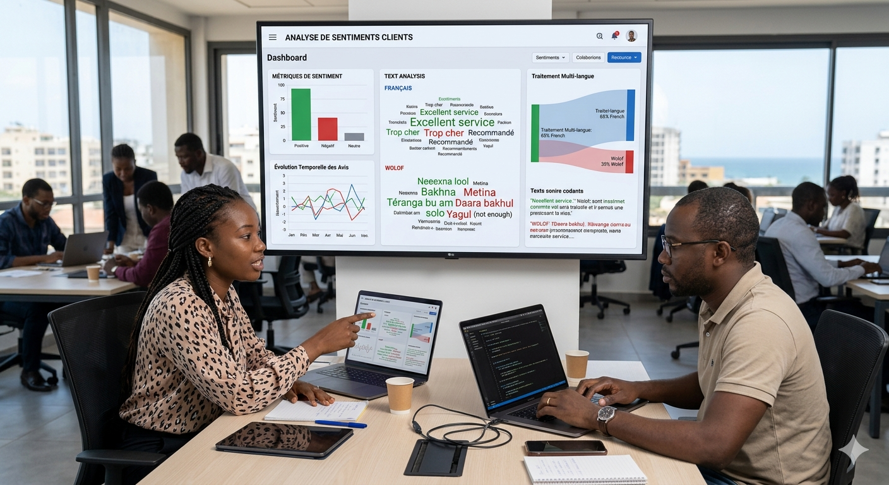
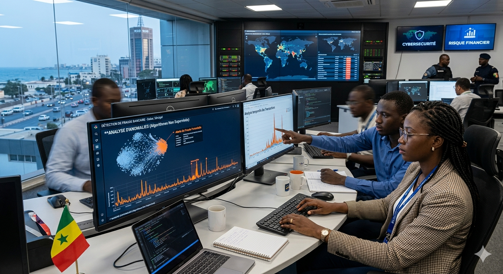
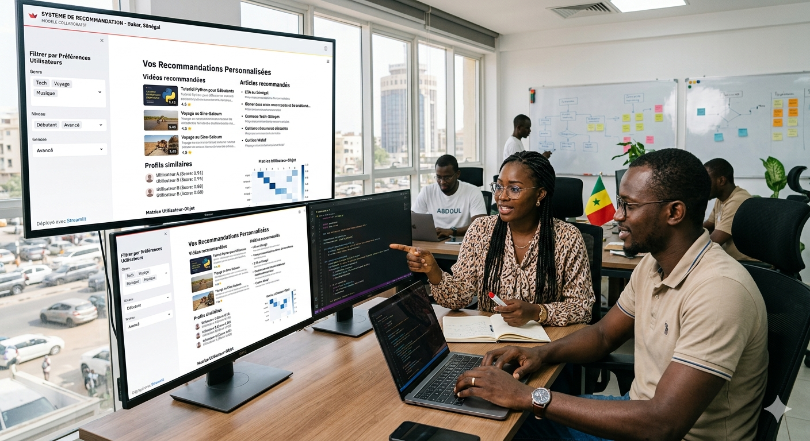
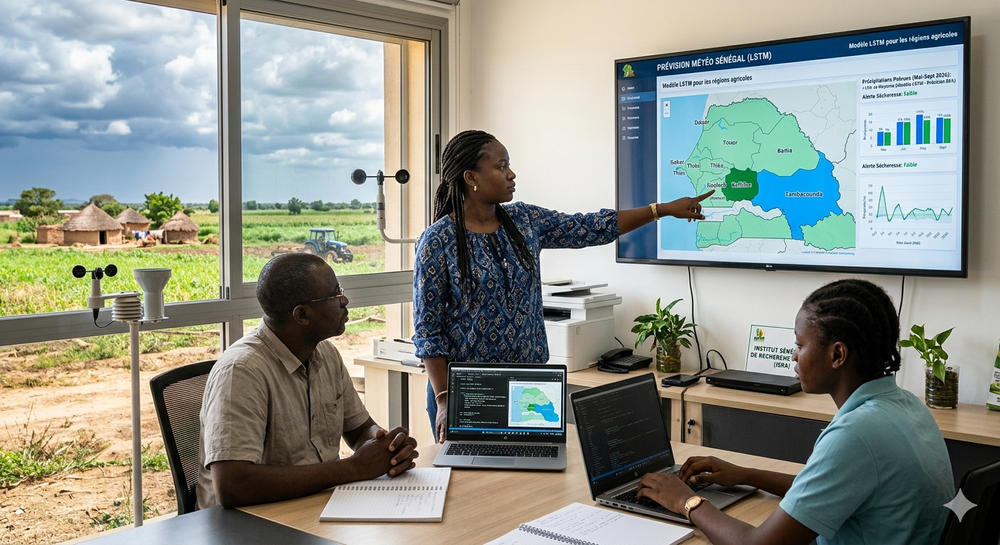

Bonjour, je suis Amadou Kassé, étudiant en Data Science à l'Université Cheikh Anta Diop de Dakar. Passionné par l'IA, l'analyse de données et la création de modèles prédictifs à fort impact.

Étudiant en Master Data Science à l'UCAD de Dakar, après une licence en Mathématiques et Informatique. Solides bases en statistiques, programmation et algorithmique appliquée aux données.
Devenir Data Scientist ou Ingénieur IA, capable de concevoir des systèmes intelligents créateurs de valeur pour les organisations en Afrique et à l'international.
Python, SQL, Scikit-learn, TensorFlow, Power BI, Pandas, NumPy, MongoDB. Modélisation ML, visualisation de données et déploiement d'applications IA avec Streamlit.
Un stage ou une collaboration en Data Science ou Business Intelligence pour appliquer mes compétences sur des projets réels à fort impact dans des entreprises innovantes.

Modèle de classification pour détecter les clients susceptibles de quitter un service télécom — précision 87%.

Tableau de bord Power BI pour le suivi des ventes et indicateurs clés d'une PME sénégalaise.

Traitement du langage naturel pour analyser les avis clients en français et en wolof.

Détection d'anomalies dans des transactions financières avec des algorithmes non supervisés.

Application collaborative déployée avec Streamlit, basée sur les préférences utilisateurs.

Modèle LSTM pour la prévision des précipitations dans les régions agricoles du Sénégal.
Disponible pour des stages ou collaborations en Data Science et IA. N'hésitez pas à me contacter.